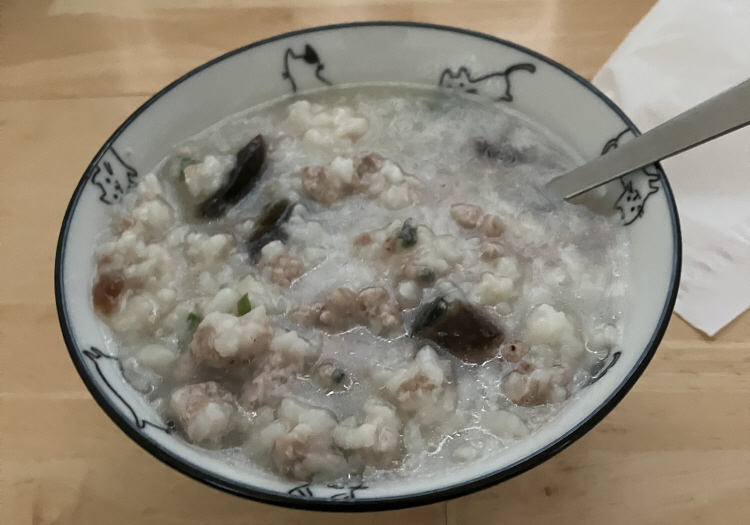

皮蛋瘦肉粥 ★ Century Egg and Pork Congee
 2 servings
2 servings 10 minutes
10 minutes-
 youtube
youtube
 Meat
Meat
美味快速的主食粥

- 1 杯 大米
提前把大米放在冷冻层，用低温破坏大米内部的纤维，熬出来的粥更细腻绵软。
- 2/3 锅 水
在锅中放入冷冻大米，水，开大火烧开后转中火煮制大米软烂，中间不时搅拌以免黏锅。
- 1/4 磅 猪肉碎
- 拇指大小 生姜
- 1 根 小葱水
准备好猪肉碎，可以用生姜小葱水提前腌制。
- 2 个 皮蛋
捣碎皮蛋切碎。
- -—–
开大火，把猪肉碎放入粥中煮熟。
- -—–
放入皮蛋碎，再煮5分钟后加盐(加足量要不然不够咸)，搅拌均匀。
- 一把 青葱碎
撒青葱碎，完成^_^